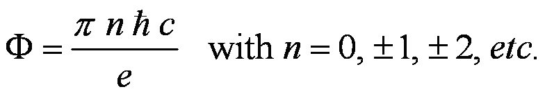

Does some aspect of the electron correspond to some geometry?
Consider the knot ribbon to be the path of continuous charge.
(A continuous charge loop does not radiate. Generates magnetic moment.)
Assume it has superconductor-like properties.
(No electrical resistance, flux quantization.)
Assuming mass (whatever that is) in motion following the charge path.
(Generates angular momentum.)
Assign an angular momentum & magnetic moment to each "loop" of the knot.
By "right hand rule", two point outward (blue) while the other two (green) point inward.
(Angular momentum and magnetic moments should be drawn in opposite directions.)
The sum of these angular momentum & magnetic moments
gives the overall angular momentum & magnetic moments (red) through the knot crossings.
Place this system into an external magnetic field.
To have a loop of current enclose the largest amount of magnetic flux
the knot is rotated to allow the flux to pass though a face of the Tetrahedron,
which is the largest opening of the knot.
This places the angular momentum vector (red) at an angle to the
magnetic flux direction.
From the geometry of the Tetrahedron, we calculate this angle to be
α = 54.7356...°.
This is the same angle as given by the Quantum Mechanics equation
cos(α) = mj / sqrt(j(j+1))
for a spin-1/2 particle (the electron): j = |mj| = |+−1/2|.
Note that the superconducting property of the continuous charge current
means that the magnetic flux through the current loop is quantized.

Are we getting close to explaining the fine structure constant α?
We only need n=4 and another factor of "e" (from the proton?).
Does the electron have a gyromagnetic ratio γe because of the magnetic flux quantization?
When the strength of the external field increases/decreases
the frequency of precession of the electron changes.
The electron's gyromagnetic ratio is given by
where the "ge-factor" is a little bigger than 2 (ge = 2.00232...).
Could that be because the knot's current loop is not a perfect circular loop?
Does the precession have to increase/decrease with B-field
in order to increase/decrease the knot's continuous charge speed
(increase/decrease the knot loop's current)?
Copyright September, 2007 by Robert W. Gray